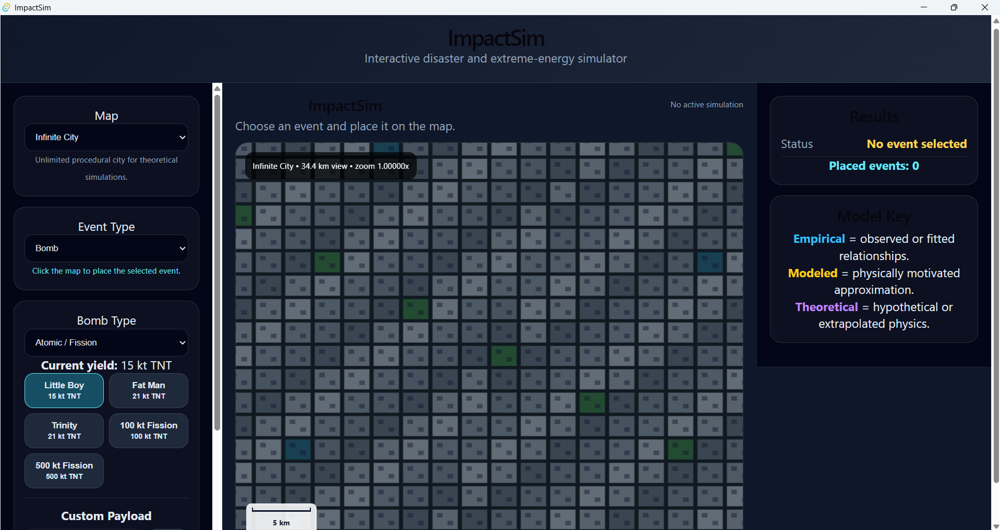
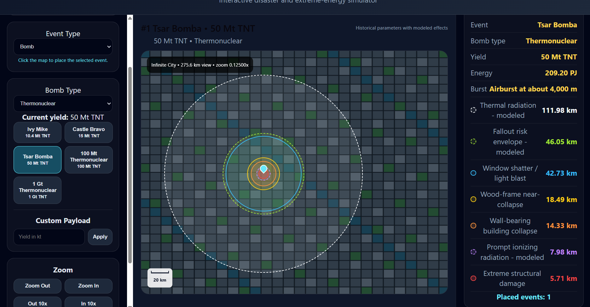
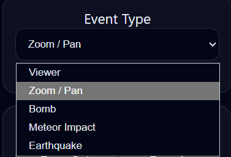
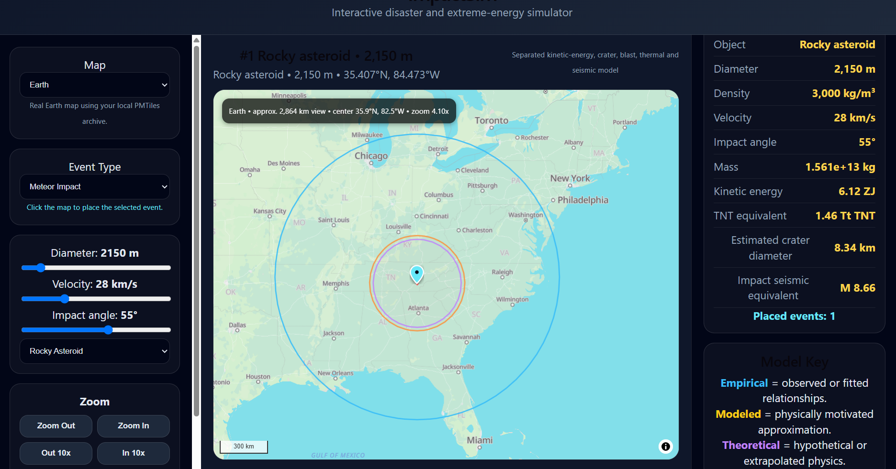
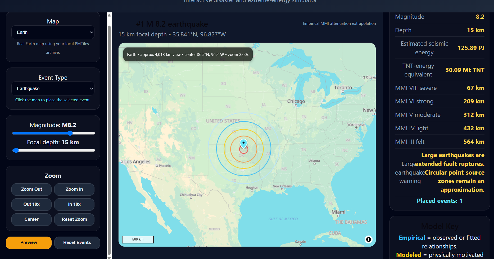
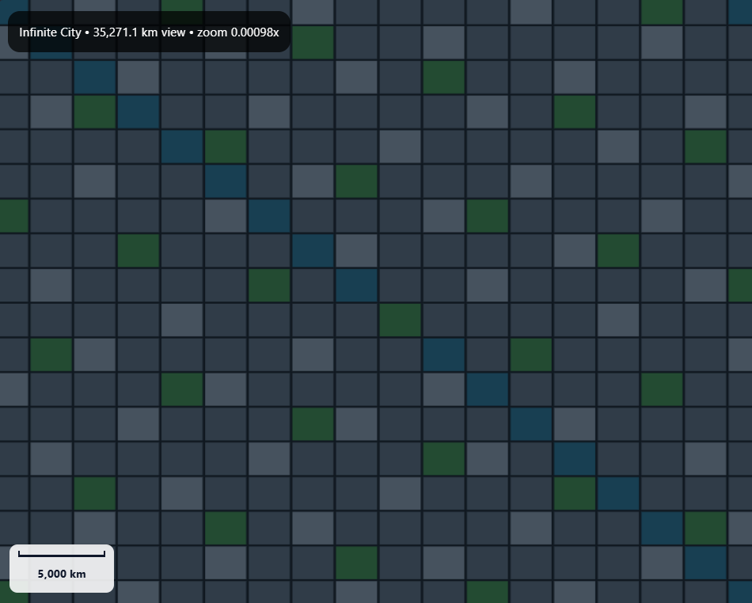

SIMULATION • MAPPING • SOFTWARE DEVELOPMENT
ImpactSim
A desktop disaster and extreme-energy simulation application built around interactive maps, configurable events, geographic visualization, and multiple simulation systems.

OVERVIEW
Visualizing extreme events
ImpactSim is an interactive simulator built around placing major events anywhere on a map and visualizing their effects geographically.
Different event types use their own parameters, calculations, presets, and visual layers while sharing the same overall application and mapping system.
The project includes nuclear detonations, meteor impacts, earthquakes, and other extreme-energy scenarios.
One of the main goals is to keep the program expandable so additional simulation types can be added without rebuilding the entire application around them.
TECHNOLOGY
How it's built
React + TypeScript
Used for the interface, application logic, simulation controls, state, and reusable components.
MapLibre GL
Powers the interactive map used to select locations and display geographic simulation results.
PMTiles
Used as part of the local map-data system for rendering geographic information inside the application.
Vite
Used as part of the development and build environment for the application.
Tauri
Wraps the project as a standalone desktop application instead of keeping it limited to a browser.
Geographic Calculations
Simulation results are translated into visible map distances, areas, rings, and other geographic overlays.
SIMULATION TYPE
Nuclear events
Nuclear events use configurable values and presets to calculate and display different effect areas around a selected geographic location.

Events can be positioned directly on the map so the results can be viewed in relation to real locations.
Historical and theoretical presets allow different nuclear-event sizes to be selected and compared.
Calculated results are represented visually using geographic areas and rings around the event.
Multiple events can be placed so different locations and scenarios can be viewed together.
CONTROLS & PRESETS
Configuring simulations
Different simulation types require different inputs, so ImpactSim provides controls and presets specific to the event being created.

INTERFACE DESIGN
One challenge is allowing each event type to expose the controls it needs without making the overall interface difficult to navigate. As more simulations are added, keeping those controls organized becomes increasingly important.
SIMULATION TYPE
Meteor impacts
Meteor simulation introduces a different group of inputs and calculations while still using ImpactSim's shared mapping and visualization system.

SYSTEM DESIGN
Nuclear events, meteor impacts, and earthquakes do not use identical inputs or calculations. Each simulation therefore needs its own logic while still behaving like part of the same application.
SIMULATION TYPE
Earthquakes
Earthquake simulation expands the application beyond explosion and impact scenarios into another type of large-scale geographic event.

MAPPING
The map is part of the simulation
The map is not simply a background for ImpactSim. It is one of the application's main systems.
Event locations are selected geographically, while calculated distances and areas are translated into visual layers around those positions.
This means the project also has to deal with scale, coordinates, map rendering, geographic distance, local map data, and the visual presentation of calculated information.
EXPERIMENT
Infinite City
Infinite City is an additional mode that expands ImpactSim beyond its standard Earth-based map.

PROBLEM SOLVING
What makes the project challenging
Different Event Models
Each simulation has different inputs and calculations, but all of them need to behave like parts of the same application.
Geographic Visualization
Numerical simulation results need to be translated into map areas that remain understandable at different scales.
Interface Design
Adding more simulation types also means adding more controls without allowing the interface to become difficult to use.
Local Map Data
Working with local geographic data introduces challenges involving storage, loading, rendering, and map scale.
Multiple Events
The application needs to keep track of multiple placed events along with their settings, calculations, and visual layers.
Desktop Packaging
Turning the project into a standalone desktop application adds another layer of development, packaging, and testing.
PROJECT GALLERY
ImpactSim in development
WHAT I'M LEARNING
Connecting different systems
ImpactSim has required several areas of development to work together, including interface design, geographic visualization, simulation logic, application state, mapping, and desktop packaging.
It has also pushed me to think about how calculated information should be communicated visually instead of simply displaying raw values.
As the application grows, keeping the underlying structure flexible enough for new simulation types becomes increasingly important.